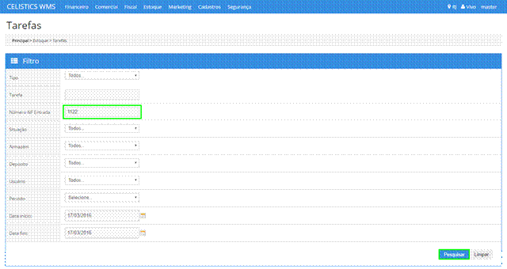
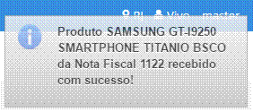

Olá, seja bem-vindo ao Manual WMS Celístics!
Neste manual, você terá todas as informações necessárias para a utilização do sistema WMS em suas operações.Você conta também com uma equipe especializada para dar todo suporte em suas operações.
Envie seu feedback, dúvida ou sugestão, clicando aqui.
Atenciosamente,
SUPORTE WMS.
VAMOS COMEÇAR?Para cadastrar novos produtos, acesse Cadastros > Apoio > Produto , conforme imagem abaixo. Através da tela, você pode Cadastrar um novo Produto, Pesquisar ou Editar produtos já cadastrados.

Para cadastrar um novo produto basta acionar o botão Novo:

O usuário deve preencher todos os campos básicos. Os campos com * são obrigatório.

O campo Tipo Recebimento é carregado de acordo com o Tipo de Material selecionado. É importante ressaltar que a escolha do mesmo irá impactar na executação das tarefas.
Ex: se o Tipo Recebimento for por Quantidade, nas tarefas, o usuário deverá informar e confirmar a quantidade. Se for por Série o usuário deverá informar os IMEIS nas tarefas de separação.

O usuário deve preencher os dados de Dimensões da Caixa, Dimensões da Unidade do Produto, Estocagem, Caixa, Paletização, Auditoria e acionar o botão Salvar.

Para acessar o Cadastro de Armazém é necessário acessar as opções Cadastros > Estoque > Armazém conforme imagem abaixo. Através da tela o usuário pode cadastrar um novo Armazém, Pesquisar ou Editar armazéns já cadastrados.

O usuario deve preencher os campos necessarios, e acionar o botão Salvar:

Após o cadastro, é necessario configurar a “Posição Rack”. Para configurar basta pesquisar o armazem, e acionar o botão destacado abaixo:
Nesta etapa o usuario deve preencher todos os campos, pois é através dos mesmos que o sistema montara o layout do armazem:

Ao acionar o botão “Montar Layout”, o sistema monta e exibe o layout do armazem, nesta etapa o usuario deve informar o metro cúbico, e definir quais serão as areas de PICKING.

Acesse a Tela de Edição pesquisando o produto desejado e clicando em ações:

O sistema apresentará a tela com os dados para a edição.
Nessa tela, você pode além de alterar as informações cadastrais do produto, fazer o upload de fotos do mesmo.
Para adicionar as fotos do produto o usuário deve acionar o botão Upload Foto 1 – Principal.
Na modal Upload Foto do Produto clique no botão > Adicionar.

Após selecionar uma imagem e fechar a modal, o sistema exibirá a imagem no bloco de fotos.
Obs:. O usuário pode adicionar até três imagens do produto.

Para iniciar o processo de recebimento, é necessário acessar as opções Estoque > Recebimento > Receber Nota Fiscal Entrada conforme imagem abaixo.

No bloco Nota Fiscal de Entrada o usuário deve preencher os dados referente a nota fiscal:
Preencher os dados dos blocos Volumes da Nota Fiscal e Tributos.
No bloco Itens da Nota Fiscal de Entrada, o usuário deve adicionar os produtos presentes na Nota Fiscal.
Para adicionar um produto, o usuário deve buscar pelo código do produto ou descrição, e preencher os demais campos. Caso a nota possua mais de um produto basta acionar o botão Adicionar Item.

Para finalizar o Recebimento de Nota Fiscal de Entrada o usuário deve acionar o botão Receber Produtos.
O sistema apresentará uma mensagem de salvo com sucesso:

Após cadastrar o Recebimento de Nota Fiscal de Entrada, o usuário deve confirmar o recebimento dos produtos, para isso basta acessa a tela Estoque > Tarefas
Após preencher os filtros, o usuário deve acionar o botão Pesquisar.

Acionar o link Executar Tarefa na coluna Ação para acessar a confirmação de recebimento.
Se a NF de recebimento possuir mais um produto o sistema gerará uma tarefa para cada produto.

Na tela de Confirmação de Recebimento o usuário deve confirmar o recebimento daquele produto seguindo a configuração do Tipo de Recebimento do mesmo, neste caso o produto possui o tipo Recebimento Por Série Entrada/Saída, logo teremos que informar as Séries(IMEIS) para isto o usuário deve acionar o botão Adicionar Lista de Séries:


Após inserir as Séries (IMEIS) o usuário deve acionar o botão Confirmar.


Após confirmar o recebimento do produto, é necessário efetuar a divisão do produto. Para isto basta acessar a tela Menu > Estoque > Recebimento > Divisão.
O usuário deve informar o número da Nota Fiscal que deseja efetuar a divisão, e acionar o botão pesquisar:

Acionar o link > Efetuar Divisão na coluna Ação para acessar a tela de Divisão de Produtos.
O usuário deve preencher o Depósito e Local que deseja alocar o produto. Caso seja necessário dividir o produto em mais de um local, basta acionar o botão destacado em verde na imagem abaixo:

Para confirmar as divisões basta acionar o botão Criar Divisão.

O processo de reversa ocorre quando o Produto retorna ao Centro de Distribuição.
Para iniciar o processo de recebimento da NF Reversa, é necessário acessar as opções Estoque > Recebimento > Receber Nota Fiscal Entrada conforme imagem abaixo.

Para determinar que a Nota Fiscal é Reversa, é necessárioque o usuário selecione o Check box “Reversa”, a partir desta ação o sistema exibira um novo campo para que o mesmo possa selecionar o Tipo de Reversa.
Neste exemplo iremos selecionar o tipo “Insucesso”, que é quando o produto saiu para entrega, mas não havia ninguém para recebe-lo.
Após selecionado os dois campos o usuario deve preencher os demais campos da NF, e acionar o botão “Receber Produtos”:


Após o processo de Recebimento Reverso, é necessário Confirmar Rebimento da NF Reversa que são as mesmas etapas da Confirmação da Nota Fiscal Recebida. Caso tenha dúvidas quanto aos processos, clique no link abaixo:
Nesta etapa o usuário pode validar se o produto a qual foi feita a divisão entrou no estoque, para acessar esta tela o usuário deve acionar Estoque > Situação do Estoque:

Na consulta deve-se informar o Armazém, Depósito, e demais campos que o usuario julgar necessario:
1 – Os filtros com * são de preenchimento obrigatório.

O usuario também pode utilizar o botão exibir pra verificar em qual posição Rack do Depósito está este produto: